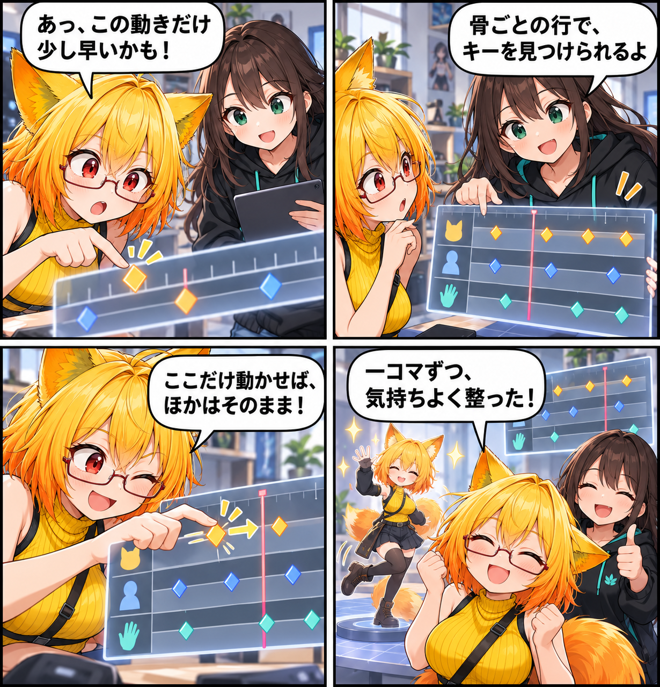

2026.10.23 / Development Log
動きを並べて、ひとコマずつ整える日
VACのデスクトップ編集に、骨ごとのキーをフレーム単位で見ながら選択・移動・削除できるタイムラインを追加しました。小さな動きの直しどころを、時間の流れの中で追えるようにする更新です。
集計期間は2026-10-22 03:00:00 JSTから2026-10-23 02:59:59 JST、参照ブランチはViewerの
main です。集計終了時点のHEADは 0aacdb944e979003d5e43bced4baf7a2218c3e8b、期間内コミットは8件でした。未コミット差分は期間内の確定実績と確認できないため含めていません。
どの骨の、どの瞬間かを見る
タイムラインは、骨ごとの行にキーを並べて表示します。フレーム目盛りと再生位置を見ながら、動きの中のどの瞬間を触っているのかを追えるようにしました。
ひとつのキーだけを動かす
選択した骨のキーは、フレーム単位で選択・移動・削除できます。同じ時刻に別の骨のキーがあっても、選んだ骨のキーだけを扱うため、直したい場所を絞って調整できます。
長い動きも、見渡して確かめる
横スクロールとズームを備え、長い動きでも必要な区間へ寄れます。編集中はアイドル動作を休ませるので、意図したポーズを見失いにくくなっています。
外から扱う入口も整備
あわせてVACの編集とタイムライン操作をMCP / Runtime APIから扱う入口を追加し、スモークチェックと契約テストも増やしました。画面で見つけた「ここ」を、外部操作でも同じ編集対象として扱える土台です。
4コマの裏話
今回は、一つだけ早いキーを見つけ、骨ごとの行からそのキーだけを動かす場面にしました。隣のキーを残したまま一コマずつ整える、今回の操作感を小さな寸劇にしています。
まとめ
VACのデスクトップ用タイムラインでは、骨ごとのキーをフレーム単位で追い、選択したキーだけを動かしたり外したりできます。動きを大きく組み立てたあとにも、気になる一コマへ戻りやすい編集環境を目指しました。
本日のひとこと
小さな一コマが、動き全体の気持ちよさになる。